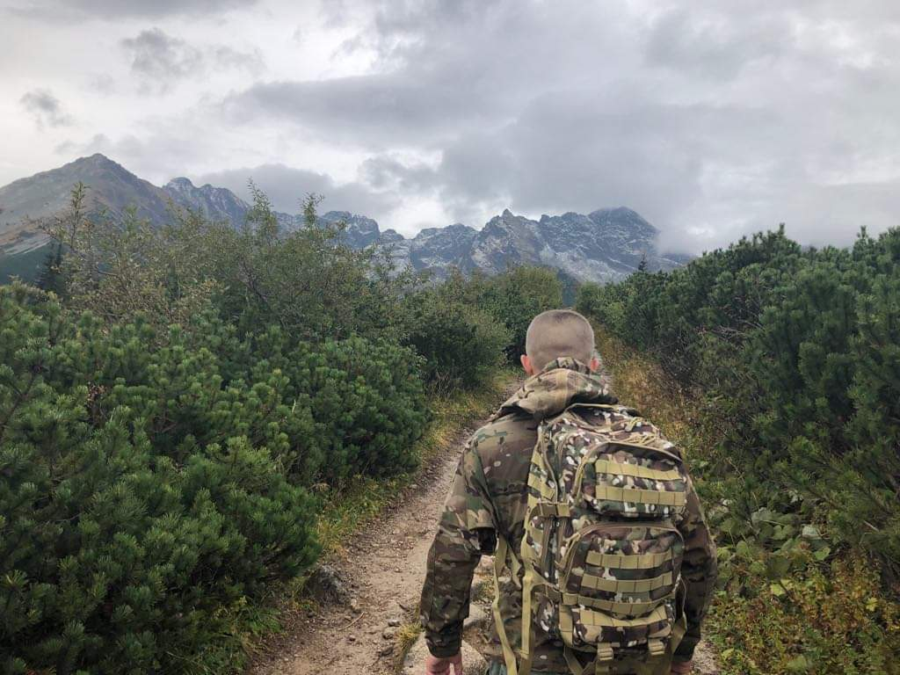

<ion-header>
  <ion-toolbar class="ion-no-padding authentication__toolbar">
    
  </ion-toolbar>
</ion-header>

<ion-content>
  <ion-segment [value]="selectedAuthenticationAction" mode="md" color="success"  (ionChange)="onSegmentClicked($event)" >
    <ion-segment-button [value]="authenticationActions.signIn" [id]="authenticationActions.signIn">
      <ion-label>SIGN IN</ion-label>
    </ion-segment-button>
    <ion-segment-button [value]="authenticationActions.signUp" [id]="authenticationActions.signUp">
      <ion-label>SIGN UP</ion-label>
    </ion-segment-button>
  </ion-segment>


</ion-content>
